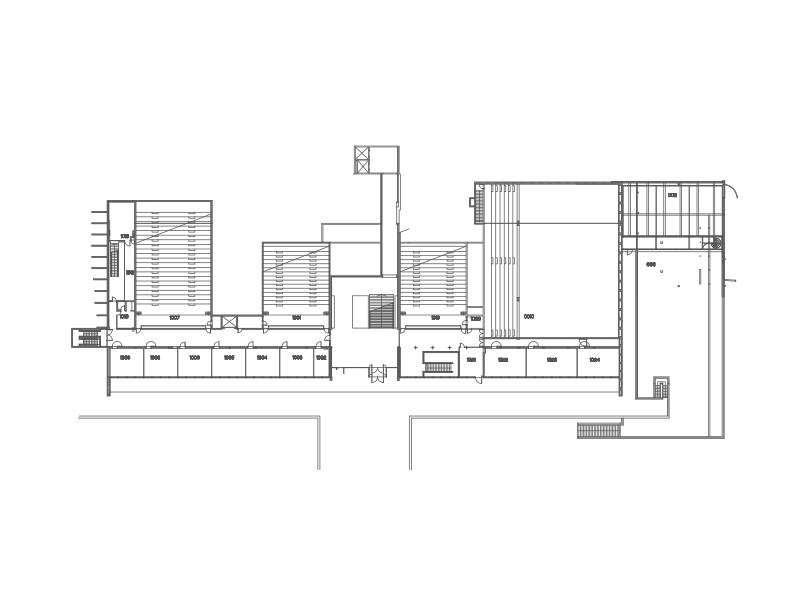

Follow these rules so all CampusWay buildings are mapped consistently.
Place the room node at the room entrance/door, not in the middle of the room.
Place walking nodes along the actual path a person can walk. Add extra nodes at turns, intersections and corridor changes.
Place a node at the elevator on every relevant floor. The same physical elevator must use the same Connector ID on every floor.
Place a stair node on every floor the staircase reaches. The same physical staircase must use the same Connector ID on every floor.
Add an Entrance node at every real entrance/exit that CampusWay users can use.
Only connect nodes when a person can actually walk directly between them. Do not connect paths through walls or inaccessible areas.
Make sure elevators and stairs are identified correctly. CampusWay uses these node types to calculate accessible routes.
Use Export All and send the exported building JSON file to the CampusWay team.
